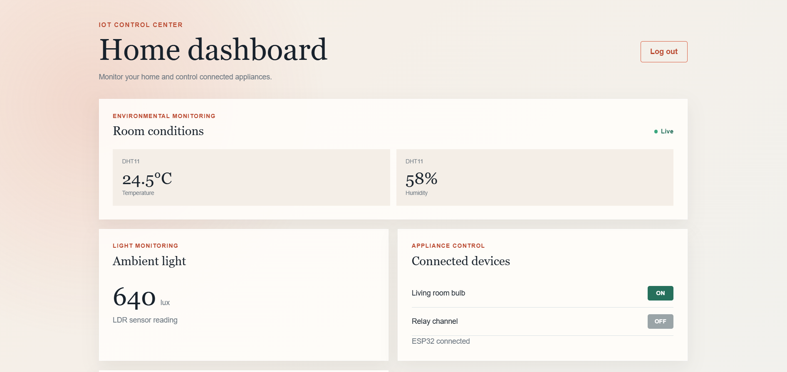
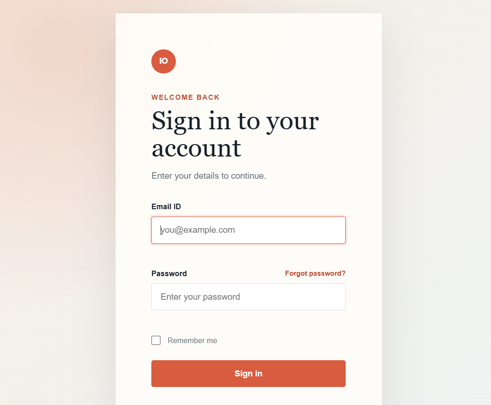
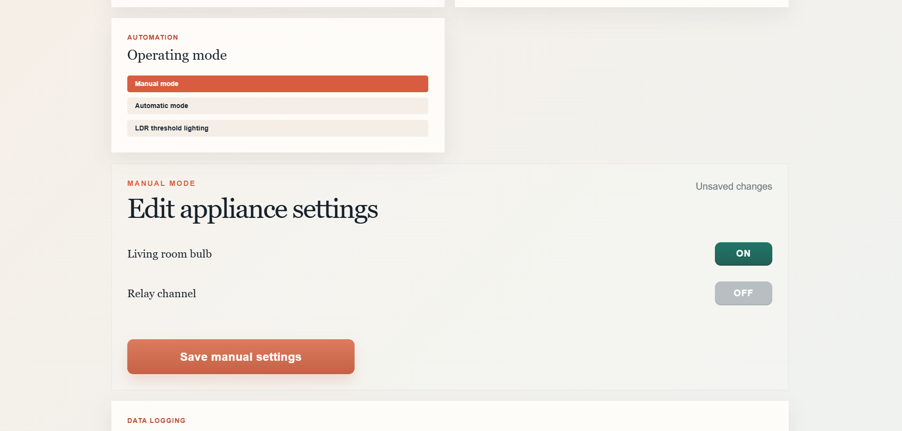
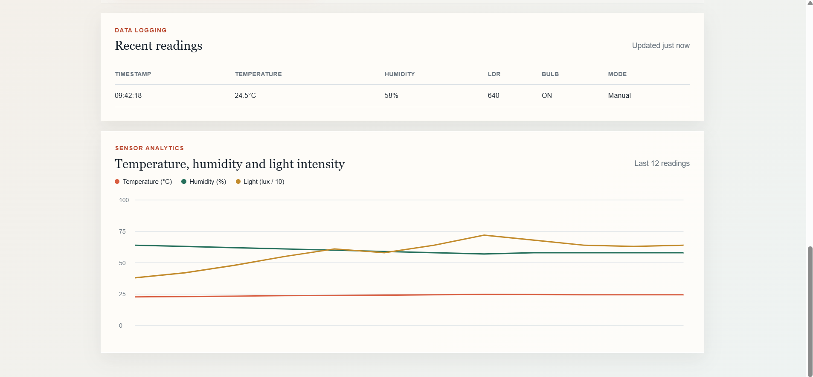

Temperature
24.8°
Celsius · DHT11
The dashboard brings environmental readings and appliance control into one simple view. Its layout is designed to make the system state easy to scan on a desktop or phone.
Relay state is shown separately from the sensor readings.
Dashboard preview with illustrative readings.
The ESP32 gathers temperature and humidity from a DHT11 sensor and ambient light from an LDR. It samples the sensors every two seconds and smooths the light readings to reduce small fluctuations. Readings travel over Wi-Fi to Firebase, where the web dashboard can display them.
Relay commands travel back through Firebase to the ESP32, which switches the connected appliance. The relay in this setup is active-LOW: a LOW GPIO signal activates it, and a HIGH signal deactivates it. The dashboard keeps sensor readings, connection status, and relay state in separate areas so each is easy to understand.
The interface groups temperature, humidity, and light into consistent metric cards, then gives relay control its own panel. Connection and update details remain visible so a user can distinguish sensor information from appliance state. Responsive spacing keeps the same hierarchy on smaller screens.
Three sensor values use clear labels, units, and a consistent visual scale.
The relay control is paired with an explicit ON state and device label.
ESP32 and Firebase status provide context for the data shown in the dashboard.





The goal of this task is to create a responsive three-page dashboard for Forge using HTML, CSS, and JavaScript. The dashboard allows users to view sensor readings and control a bulb from different screen sizes.
In earlier tasks, the ESP32 was controlled through a local web page, an Adafruit IO dashboard, and Google Assistant. None of these provided Forge with its own dedicated interface. This task creates a single, clean place for sign-in, live monitoring, bulb control, mode selection, and data download.
This interface is built before the hardware is connected. Firebase is set up through a placeholder configuration file, and the real values are added in Task 5.
This project is a three-page web app: a landing page, a login page, and a dashboard. The dashboard displays live temperature, humidity, and light values, includes an animated bulb toggle, provides manual and automatic modes, has a light-sensitivity slider, shows a history table, and supports CSV export.
Basic operation: User → Landing Page → Login Page → Dashboard → Firebase Realtime Database
The web page used to see the sensor data and control the bulb. Here it is a small three-page web app, built on its own before any hardware is connected.
A landing page announcing Forge, a login page, and the dashboard itself.
The three languages of every web page: HTML is the structure, CSS is the look, JavaScript is the behaviour. Forge uses only these, with no framework.
Keeping track of what the page currently knows, for example whether the bulb toggle is a manual command or the automatic mode's decision.
The control that switches between manual and automatic.
The slider that sets the threshold (0–4095) used in automatic mode.
The list of the latest recorded readings.
One click downloads the recorded temperature, humidity and light as a spreadsheet file.
Checking what a user types before it is used, so bad values never reach the database.
What the page shows while data is still arriving, and what it says when something goes wrong, instead of a blank screen.
Styles that adapt to the screen size. The dashboard was tested on phone, tablet and desktop.
A short smooth change between two states. Without it the toggle felt dead; with it the same response felt instant.
How fast something feels rather than how fast it is. Users do not care about the stack, they care that clicking ON turns the light on.
The complete system contains four major elements:
User → Web Dashboard (Browser) → Firebase (Auth + Realtime Database) → ESP32 → Bulb
In this task only the first two parts are built and checked. The Firebase and ESP32 connection is completed in Task 5.
A foundation in cloud services, databases, dashboards, authentication, and Firebase configuration for connected IoT applications.
Cloud computing delivers services such as servers, storage, databases, networking, and software over the internet. Instead of maintaining physical servers locally, users can access computing resources from a cloud provider when they need them.
Reach cloud resources from connected locations and devices.
Reduce the need to purchase and maintain local server hardware.
Adjust capacity as an application or its data grows.
Store and manage application data in a shared cloud environment.
Use managed services to build and release applications more quickly.
Service models describe how much of the infrastructure is managed by the provider and how much is managed by the developer or user.
| Model | Full form | What it provides | Example |
|---|---|---|---|
| IaaS | Infrastructure as a Service | Virtual servers, storage, and networking. | AWS EC2 |
| PaaS | Platform as a Service | A managed platform to develop and deploy applications. | Google App Engine |
| SaaS | Software as a Service | Ready-to-use software accessed online. | Google Workspace |
| BaaS | Backend as a Service | Ready-made backend tools such as authentication, databases, and APIs. | Firebase |
Provides computing infrastructure without purchasing physical hardware.
Lets developers focus on applications without managing the underlying platform.
Lets users access software directly through a browser or app.
Simplifies backend work with services such as sign-in and cloud data storage.
A cloud platform provides online tools to build, host, manage, and operate applications. It can store data, connect devices, manage users, and provide computing resources over the internet.
Cloud infrastructure and managed services.
Compute, storage, networking, and application services.
Cloud infrastructure and development services.
Application backend services for data, sign-in, and hosting.
IoT example: An ESP32 can send sensor readings to a cloud platform, where the data is stored and made available to a dashboard.
A database is an organized collection of information that can be stored, accessed, managed, and updated. IoT applications use databases for sensor readings, device information, user details, and control commands.
| Database type | How it stores or serves data |
|---|---|
| Relational | Structured data organized in tables. |
| NoSQL | Flexible data formats such as documents or key-value pairs. |
| Cloud database | Data hosted on cloud infrastructure for remote access. |
| Real-time database | Updates synchronized between connected applications and devices. |
Example: Firebase Realtime Database can store readings from an ESP32 and make updated values available to a connected dashboard.
A cloud-based dashboard is a web interface for viewing information from connected devices and applications and sending commands remotely.
Show live sensor readings and device status.
Present values with charts, indicators, and history.
Send commands to connected devices from different locations.
IoT example: An ESP32 sends temperature and humidity readings to Firebase; the dashboard retrieves and displays the latest values.
Authentication verifies identity. Authorization decides what an authenticated user is allowed to access.
| Authentication | Authorization |
|---|---|
| Answers, "Who are you?" | Answers, "What are you allowed to do?" |
| Uses passwords, one-time codes, or other sign-in methods. | Uses roles, permissions, and access rules. |
| Example: signing into Firebase with email and password. | Example: an admin controls devices while a standard user can only monitor them. |
Firebase is a Backend as a Service (BaaS) platform from Google. It provides backend tools so developers can build applications without managing all the backend infrastructure themselves.
| Firebase service | Purpose |
|---|---|
| Firebase Authentication | Manages user identity and sign-in. |
| Firebase Realtime Database | Stores and synchronizes data in real time. |
| Cloud Firestore | Provides a scalable NoSQL document database. |
| Firebase Hosting | Hosts web applications. |
Sensor data travels from the device to the cloud dashboard. Control commands can travel back through the database to the ESP32 and its connected output.
After completing this module, I gained an understanding of:
Cloud Computing · Firebase · IoT Integration
Learning · Understanding · Building connected applications
These JavaScript patterns protect the dashboard, keep its Firebase data current, control how relay state is displayed, validate settings, and export readings.
The authentication guard allows only signed-in users to access the dashboard. Firebase Authentication checks the login state, and the user's unique ID (UID) becomes the root of that user's database path.
onAuthStateChanged(auth, (user) => {
if (!user) {
location.replace("login.html");
return;
}
base = "users/" + user.uid;
start();
});Firebase reports whether a user is currently authenticated.
Unauthenticated visitors are redirected to the login page.
The authenticated UID sets the user's database root before the dashboard starts.
Firebase onValue listeners watch database paths and update the dashboard when new values arrive.
Monitor ON/OFF state and keep the interface current.
Track whether control is manual or automatic.
Update values as new measurements arrive.
Synchronize dashboard fields with the ESP32-C3 Rust publisher.
Integration requirement: The ESP32-C3 publisher and dashboard must use matching Firebase database paths and field names so they exchange the intended values.
The display logic uses the requested state in manual mode and the latest reported relay state in automatic mode.
const on = mode === "auto"
? !!(latest && latest.relay)
: bulbWanted;
toggle.checked = on;
toggle.disabled = mode === "auto";| Mode or control | Dashboard behaviour |
|---|---|
| Manual mode | Displays the user's requested bulb state. |
| Automatic mode | Displays the actual relay state from the latest data. |
| Toggle control | Disabled in automatic mode to prevent a manual override through this toggle. |
This keeps the display aligned with the selected operating mode.
The threshold slider sets the sensor level used by automatic operation. The value is checked before it is written to Firebase.
0 to 4095.
Reject values outside the supported range before sending them to the database.
The range corresponds to the ESP32 ADC values used by this application.
| Feature | Purpose |
|---|---|
| Loading status | Shows that data is still being loaded. |
| Live status | Indicates that the dashboard is receiving updates. |
| Offline status | Indicates that the system is not currently connected. |
| Error handling | Displays readable messages when an operation fails. |
| CSV export | Downloads stored readings for offline analysis. |
CSV export: Requests up to 5,000 records, downloads a .csv file named forge-readings.csv, and uses a browser-based download so the readings can be analyzed in a spreadsheet.
Show the bulb state requested by the user.
Show the actual relay state reported by the latest data.
Through these code sections, I learned how to:
Authentication · Real-Time Sync · Device Control · Data Management
Task 5 - ESP32 Smart Home Integration
The ESP32 is the hardware controller in the smart home IoT system. It reads environmental sensors, communicates with Firebase over Wi-Fi, receives appliance commands, and controls the relay module.
| Function | Responsibility |
|---|---|
| Wi-Fi connection | Connects the ESP32 to the wireless network. |
| Firebase connection | Communicates with Firebase Realtime Database. |
| Temperature and humidity | Reads environmental measurements from the DHT11. |
| Light monitoring | Reads ambient light levels from the LDR. |
| Sensor upload | Sends sensor readings to Firebase. |
| Command retrieval | Reads the bulb-control value from Firebase. |
| Relay control | Switches the connected appliance ON or OFF. |
| Component | ESP32 pin | Function |
|---|---|---|
| DHT11 | GPIO 4 | Temperature and humidity |
| LDR | GPIO 34 | Analog light measurement |
| Relay module | GPIO 5 | Appliance switching |
Activate the relay and report the bulb ON state.
Deactivate the relay and report the bulb OFF state.
The ESP32 joins the configured wireless network using the WiFi.h library.
The DHT library reads temperature and humidity; analogRead() reads the LDR.
Firebase_ESP_Client uploads readings and retrieves bulb-control commands.
The ESP32 checks the received Boolean value and changes the relay output.
millis() schedules sensor updates every two seconds without blocking the main loop with a delay.
float temperature = dht.readTemperature();
float humidity = dht.readHumidity();
int ldrValue = analogRead(LDR_PIN);Firebase.RTDB.setFloat(&fbdo, "/IoT/sensors/temperature", temperature);
Firebase.RTDB.setFloat(&fbdo, "/IoT/sensors/humidity", humidity);
Firebase.RTDB.setInt(&fbdo, "/IoT/sensors/ldr", ldrValue);if (Firebase.RTDB.getBool(&fbdo, "/IoT/control/bulb")) {
bool bulbState = fbdo.boolData();
if (bulbState) {
digitalWrite(RELAY_PIN, HIGH);
Serial.println("Bulb: ON");
} else {
digitalWrite(RELAY_PIN, LOW);
Serial.println("Bulb: OFF");
}
}| Library | Purpose |
|---|---|
WiFi.h | ESP32 wireless connectivity. |
Firebase_ESP_Client.h | Firebase communication. |
DHT.h | DHT11 sensor interfacing. |
The complete Arduino program brings together Wi-Fi configuration, Firebase initialization, sensor acquisition, database communication, and relay control.
Source file: esp32_smart_home.ino
Add the complete ESP32 source code to this file in the project repository.
The smart home dashboard combines HTML, CSS, JavaScript, and Firebase integration to monitor sensor values, control appliances, review history, and manage settings.
| Feature | Description |
|---|---|
| User interface | Clean, responsive smart home dashboard. |
| Account interface | Sign-in and account creation using the supplied localStorage-based implementation. |
| Temperature and humidity | Displays DHT11 readings, with a visual humidity indicator. |
| System mode | Provides Manual and Automatic mode selection. |
| Appliance control | Lets the user operate the bulb control interface. |
| Historical analytics | Displays temperature and humidity trends. |
| Sensor log and CSV export | Displays recorded sensor information and provides an export interface. |
| Notifications and settings | Provides system notifications and access to platform settings. |
The interface groups authentication, navigation, monitoring, device controls, analytics, and sensor history into a single dashboard.
Sign in or create an account.
Account, settings, and notifications.
Temperature, humidity, and system mode.
Bulb ON/OFF control.
Performance charts for recorded values.
History table and CSV export.